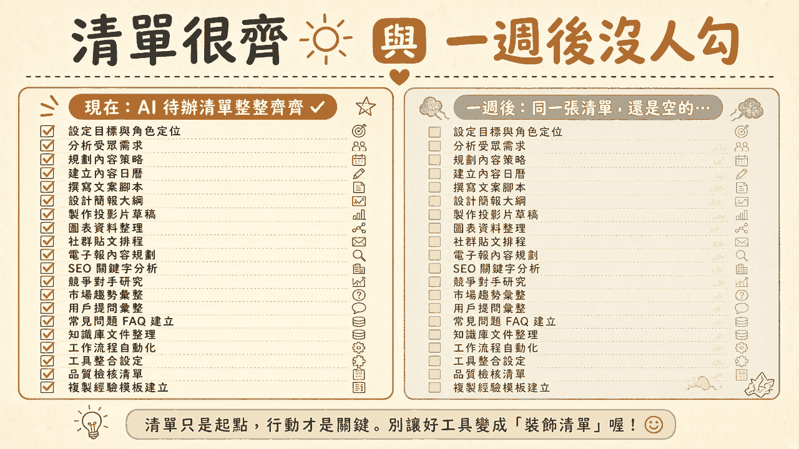
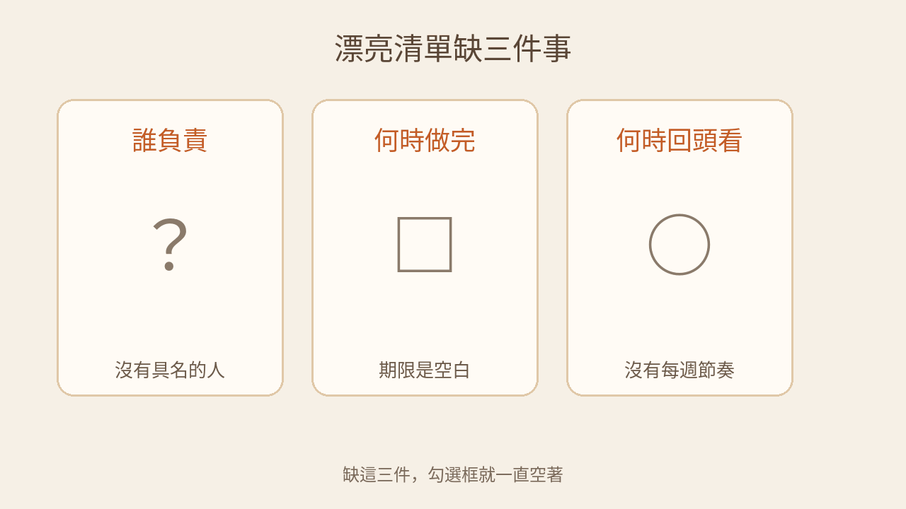
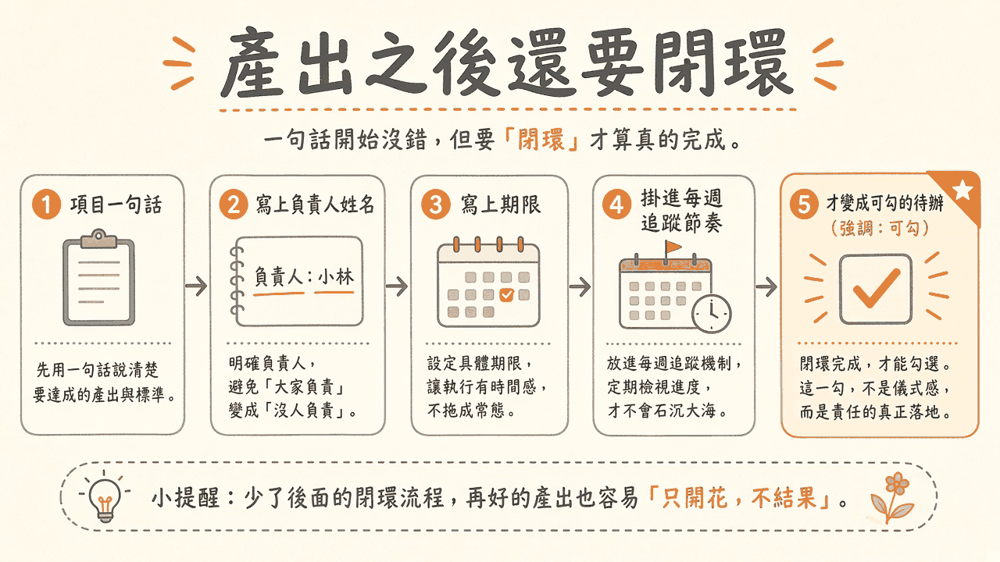

週一，模型交來一張待辦清單。項目平行、動詞整齊，勾選框排成一列，看起來這週的工作已經被安排好了。下一週的同一天打開同一張清單，勾選框還是全空。清單沒有變少。沒有人勾。
閱讀說明：本文為編輯依常見待辦與追蹤實務整理的科普短文，非整理自單一節目或供應商白皮書；文中不引用未查核的市場數字或產品保證。場景為示意。
週一，有人請模型把這週的工作列成清單。出來的項目很齊：整理常見問題、補上說明文件、對一下下週要問的人。每一項都是一句完整的話，勾選框也在。團隊把連結貼進頻道，有人回「這張清單不錯」。
下一週再打開，同一張清單還在。勾選框一個都沒有被勾。沒有人留一句「這項取消了」，也沒有人改過日期。清單仍舊整齊。整齊停在產出的那一刻。
這不是模型不會寫。寫清單，它做得好。空框來自清單寫完之後沒有接上責任。項目在，負責人的名字不在，做完的日子不在，每週回頭看的時間也不在。三件缺著，勾選框沒有人覺得是自己的，也沒有一個固定的時間會被打開。
責任要繞回來，才算有人接住。項目先說成一句話，寫上一個問得著的名字、一個看得到的日子，再掛進每週會打開的節奏。有人在那個時間看過這一項，勾選才代表完成或取消。這一段繞回來的過程，這裡稱為責任閉環。
清單很齊，只說明產出完成。一週後勾選框仍全空，是責任閉環還沒開始。把這兩件事看成同一件事，團隊會用「清單已經有了」來回報進度。進度看的是有沒有人、有沒有期限、有沒有人在固定時間打開那些空框。
冰箱門上貼著一張採買清單，分類清楚，字也工整。一週後打開冰箱，該買的還是沒有。清單沒有寫錯。沒有人的名字在上面，沒有「週三前買完」，也沒有人在固定的晚上問這張紙。紙還貼著。菜沒有進門。

插圖：白話科技編輯繪製／AI 輔助，非新聞照片
負責人是一個問得著的名字。問「這項現在到哪了」，要有一個人會答。清單上常見的寫法是「設計組」「大家」「後續跟進」。這些詞把工作放在一群人身上。一群人不會在週五打開勾選框。
模型很會把責任寫得平順。它會寫「由相關同事協作完成」，讀起來像已經安排好。協作可以發生。問進度的時候，仍要有第一個被點名的人。沒有這個名字，每個看到清單的人都有理由以為別人會勾。
項目寫「整理常見問題」。會上有人點頭，清單就把它收進去了。負責人欄是空的，或寫著「客服相關」。一週後，客服以為產品會整理，產品以為客服已經在做。勾選框維持空白。空白不是偷懶的證據。空白是這一項還沒有主人。
寫不出一個名字，這一項就先不要算進這週可勾的清單。它可以留在「尚未指定」。留在那一欄，是為了讓空著被看見，而不是用部門名稱把空欄蓋住。
期限是一個看得到的日子。日子讓下一個人知道，檢查的時候要對的是哪一天。「盡快」「下個版本」「有空再做」在清單上很常見，因為它們不跟任何人衝突。不衝突的代價是，每個人把日子理解成不同的天。
沒有日子，勾選就沒有時間感。工作可以一直停在「還在進行」。這樣放很久之後，清單仍舊整齊，因為沒有一個日期會把空白變成該被打開的問題。
日子可以改。改的時候寫下新的日子，並讓下一次檢查看得到這個改動。改期是閉環的一種。期限若繼續空白，項目卻留在「這週要做」裡，大家會以為它還沒開始。它的狀態其實是尚未排期。
寫不出日子，這一項的狀態是尚未排期。尚未排期可以誠實地留在清單上。它這週不該被期待打勾。
名字和日子都在，仍可能一週後全空。沒有人在固定的時間打開這張清單。日期過了，項目還在，勾選框還空著，沒有人把過期說出來。
每週節奏是一個會重複的檢查。時間短到真的排得進既有的週會，或既有的看板檢視。打開的是同一份清單。看的是還沒勾的項目。問的是三句：這項還要不要做、負責人還是不是這個人、下一次檢查是哪一天。
三種結果都算回頭看過。做完了，就勾。還要做，就留下下一次檢查點。不做了，就標成取消，並寫一句原因。放著過期、勾選框繼續空著、也沒有下一檢查點，這一次回頭看就還沒有發生。
沒有每週節奏，清單會變成裝飾。它掛在頻道最上面，每個人都知道它存在。存在不是追蹤。追蹤是有人在固定時間把空框打開。
三張卡片可以排得很漂亮。第一張沒有簽名，第二張沒有到期日，第三張的日曆上沒有圈起來的那一天。排版完成的時候，工作看起來已經被整理過。一週後卡片還在桌上，事情沒有被問過。

插圖：白話科技編輯繪製／AI 輔助，非新聞照片
閉環的第一步不是多寫幾項，是把已經出現的項目收成一句話：要交出什麼，怎樣算這一項做完。一句話讓勾選有對象。對象模糊的時候，名字和日子會掛在一團工作上，一週後沒有人知道勾的是哪一件。
「把說明文件處理一下」容得下很多種完成。改成「把登入失敗的三種情況寫進說明文件，並放到團隊已經在用的說明頁」，勾的時候才有東西可對。句子仍要短。短是為了讓每週回頭看的人一眼讀完。
這一小步容易和另一件事混在一起。可交接的產物，是一份別人接得走、放在固定地方、有人簽名的檔案。這裡的一句話只劃出待辦的邊界，讓後面的名字、期限和節奏有地方掛。項目一句話 ≠ 一份可交接的產物。
名字寫一個人。工作可以由兩個人一起做，負責人仍是問進度時第一個找的那個。清單上寫「大家負責」，讀起來像公平。一週後公平會變成沒有人負責，因為每個人都把勾選留給另一個人。
日子寫在名字旁邊。看得到的日期，讓執行有一個對照。日期若會變，變的時候改清單上的那一格，而不是在聊天裡說一聲。聊天裡的新日期，沒有打開清單的人看不到。
模型可以起草這兩格。起草出來是空白，就保持空白，標成尚未指定、尚未排期。不要為了讓清單看起來齊，填上部門名稱或「盡快」。看起來齊，會把缺的那兩格藏起來。
名字和日子寫好之後，這一項要出現在團隊每週本來就會打開的工具裡。既有的看板、既有的工單、既有的週會清單都可以。另開一個頁面把清單排得很漂亮，若這個頁面沒有被排進每週，它就是裝飾清單。
掛進去的時候，多寫一個下次檢查點。檢查點是下一次有人會打開這一項的日子，通常落在每週那個固定的檢視裡。期限回答何時做完。檢查點回答何時回頭看。兩個日子可以是同一天，也可以檢查點早於期限。兩個都空白，這一項還沒有掛進節奏。
每週檢視只做一件事：把還沒勾的項目走一遍。做完的勾上。還要做的，更新負責人、期限或下次檢查點。取消的標成取消。檢視結束時，不該留下「空框、而且沒有下一次檢查點」的項目還被當成這週的進度。
可勾，指的是這一項已經走完前面幾步：一句話、負責人、期限、每週節奏。勾選發生在工作完成，或明確取消的時候。產出清單的那一刻，勾選框空著，是誠實的。那時還沒有人做完，也不該用勾選來表示「清單已經寫好」。
所以要把兩個事件拆開。產出清單，是項目被寫下來。勾選完成，是閉環之後的狀態。工具若把這兩件事記成同一個動作，團隊會在清單產生的那一天，以為進度已經開始被追蹤。追蹤要等有人在檢查點打開它。
這一勾不是把清單變整齊的儀式。勾，是責任落地之後的紀錄。一週後若仍全空，先問這張清單上的每一項，有沒有名字、有沒有日子、有沒有被掛進每週會打開的地方。三項裡有缺的，空框是預期的結果。
種子包裝袋上印著品種、數量和季節，說明可以很齊。要結果，還得有人種下去、有採收的日子、有人每週去田裡看一次。少了後面這幾步，包裝再完整，也容易只開花，不結果。袋子是產出。結果要閉環。

插圖：白話科技編輯繪製／AI 輔助，非新聞照片
以下是編輯根據本文延伸的實務建議，不是講者原話，也不是已驗證的研究結論。
待辦的欄位最少要有負責人、期限、下次檢查點。欄位可以空。空的時候，狀態要寫成尚未指定、尚未排期，或尚未排入每週檢視。項目句子寫得再完整，也不能把這三格看起來補滿。三格露出來，空框才有人知道該補哪裡。
把「產出清單」和「勾選完成」拆成不同事件。產出清單只記錄項目被寫下。時間點停在清單出現的那一刻，勾選框維持未勾。勾選完成要等負責人、期限、下次檢查點都在，並且有人在檢查點把狀態改成完成或取消。兩個事件若共用同一個時間，事後會分不出「清單寫好了」和「工作做完了」。
入口掛在團隊已經在用的工作工具，而不是另開一個裝飾頁。看板、工單或共用表上加上這三欄，並讓每週檢視打開的就是這個入口。新頁面可以很整齊。沒有被每週打開，它就不會產生勾選。
選一份團隊已經在用的待辦清單。加上負責人、期限、下次檢查點三欄。若工具允許，把「清單已建立」和「項目已勾選」分成兩個狀態，或兩筆紀錄。驗收方式：請一位沒有寫這份清單的同事，只打開這個既有工具，任選一項，說出負責人、期限與下次檢查點。三項都說得出來，這一項才留在可勾的狀態。有任一項說不出來，這一項維持未勾，並標成尚未補齊。這是初步試驗，用來檢查這三欄在既有工具裡看不看得見。
以下是編輯根據本文延伸的實務建議，不是講者原話，也不是已驗證的研究結論。
開會產出的待辦，當場補齊三欄。散會前看每一項：誰負責、何時做完、何時回頭看。補不出來的，不要算進這週要勾的清單，標成尚未指定或尚未排期。當場補，是因為散會之後，每個人對「誰會處理」的記憶會不一樣。
指定誰看每週的空框。指定一個人，在固定的每週時間打開同一份清單，把仍然全空、或已過期卻沒有下一檢查點的項目念出來。這個人可以是你，也可以是這次被指定收尾的同事。沒有這個人，空框會繼續被當成還沒開始。
不要用「清單很齊」代替進度。有人回報清單已經整理好，先問三欄在不在、上一次檢查有沒有人打開。進度看勾選，以及沒勾的項目有沒有下一次檢查點。排版整齊只說明產出完成。
選一場由你主持、會產出待辦的會。散會前在團隊已經使用的那份清單上補齊三欄，並指定下一週由誰看空框。驗收方式：一週後，被指定的人能對每一項指出兩種結果之一：已經勾選，或寫著下一次檢查點。仍有項目是空框，而且沒有負責人、期限或檢查點，那些項目維持未完成。這個試驗只檢查你帶的這一場會，與下一週的那一次回頭看。
空框可以誠實地空著。空著又沒有下一次檢查，那一項就還沒進入責任閉環。
本文為編輯根據常見待辦與追蹤實務整理的科普短文，非整理自單一節目或供應商白皮書，也不冒充研究結論。文中不引用未查核的市場數字或產品保證。文末兩則 Takeaway 是編輯依本文延伸的實務建議。延伸閱讀連回本站姊妹篇，供對照會上的決策錨點、可交接的產物，以及流程裡的判斷。